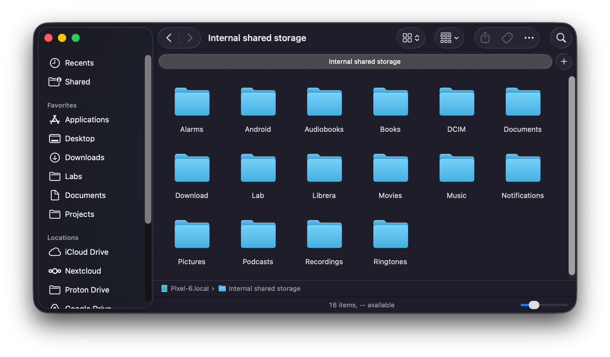

Comprador
Your Android phone, mounted in Finder. No kernel extensions. No subscriptions. No Developer Options.

What's new in v0.4.0
Plug in. Pull down the notification shade. Tap File Transfer. Your phone is in Finder.
That part hasn't changed since v0.1.0. But v0.4.0 is the release where the mount path got quiet — fewer prompts, fewer running daemons, fewer surprises.
True concurrent multi-device
Plug in two phones (or a phone and a camera). Both appear in the Locations sidebar at once. Browse one while the other transfers. No "switch active device" dance, no per-app device picker, no arbitrary one-at-a-time limit. Each device gets its own subprocess, its own mount, its own quota — the architecture has been building toward this for three releases.
Honest free-space numbers
Phones with an SD card report two quotas — one for Internal storage, one for the SD card. Finder's "X GB available" string now reflects which storage you're standing in, not a misleading sum. A 50 GB drag onto a near-full SD card gets refused at the gate instead of failing partway through.
Phone-side changes surface in real time
Delete a file on the phone — through its own Files app, through a camera app, through anything — and Finder catches up within a couple of seconds. The mount used to freeze its view at session start; now it reconciles against the device on every directory access.
No phantom files
macOS Finder writes ._<name> "AppleDouble"
companion files alongside every file you drop onto a non-HFS+
filesystem. Other mount-as-volume tools commit them straight to the
phone, so the phone's Files app ends up showing two entries for every
file you transferred. Comprador silently accepts and discards them
server-side. Phone's view stays clean.
Cleaner first launch
The privileged helper that v0.2 used for cosmetic Finder labels is
gone. v0.4.0 mounts the phone with mount -t nfs to a
loopback port — no LaunchDaemon, no Login Items approval prompt on first
launch, no /etc/hosts editing. The first time you open
Comprador after install: the icon appears in the menu bar and that's the
entire onboarding.
How it works
For Android phones
- Plug in your phone via USB
- Pull down the notification shade → tap File Transfer
- Phone appears in Finder sidebar
For cameras (DSLRs, mirrorless — Canon, Nikon, Sony, Fuji, etc.)
- Plug in the camera via USB
- If the camera asks, choose PC / Computer mode (sometimes called MTP or PTP)
- Camera appears in Finder sidebar
That's it. No menu to find, no settings to configure, no right-click ritual.
Features
- Mounts as a Finder volume — open Finder windows, drag files, use Quick Look, run command-line tools. Same affordances as any other mounted volume.
- Bi-directional transfer — copy onto the phone, copy
off it, via drag-and-drop, copy-paste, the
cpcommand, anything else that talks to Finder. - Per-storage free space — Internal and SD card report separately. Drag-onto-near-full-SD is refused at the gate, not partway through.
- Phone-side change reflection — delete a file via the phone's Files app and Finder catches up within seconds.
- Concurrent multi-device — two phones in the sidebar at once; parallel browsing and parallel transfers.
- No phantom companion files — AppleDouble
._*writes are filtered at the mount layer; the phone never sees them. - Camera support — any PTP-class device libmtp recognizes shows up the same way an Android phone does.
- Signed and notarized — first launch is a double-click; no Gatekeeper warning.
- No kernel extension — no SIP changes, no Gatekeeper approval, no privileged helper installation. The bridge is a userland binary that speaks NFSv3 to localhost.
- No telemetry — the bridge binds to the loopback interface and nowhere else. Nothing leaves your machine.
Screenshots
Architecture
Three components, simpler in v0.4.0 than any release before it.
Phone ←USB→ libmtp ←cgo→ Go bridge ←NFSv3 (localhost)→ Finder
↑
hostname from
Settings.Global.DEVICE_NAME
(via libmtp friendly name)Go NFS Bridge — a standalone binary that talks to the phone via libmtp (cgo) and serves its filesystem over NFSv3 on a random loopback port. macOS speaks NFSv3 natively, so no kernel extension, no FUSE, no driver-signing dance. The bridge is the only moving part that has to know about MTP.
Swift Menu Bar App — watches for USB devices via
IOKit, spawns a bridge per connected phone or camera, and mounts each
bridge's NFS endpoint as a Finder volume via mount -t nfs.
Per-device subprocesses mean two phones can coexist without sharing
state.
That's the whole stack. No privileged helper. No kernel extension. No WebDAV layer. No File Provider extension. No daemon to keep alive when you quit the app.
See docs/ARCHITECTURE.md
for the detailed component diagram.
Get it
Download
the latest release. Open the .dmg, drag
Comprador.app to Applications, eject the disk image. First
launch is a double-click.
Requirements
- macOS 13 (Ventura) or later
- Apple Silicon Mac (M1 or newer)
- A data-capable USB cable (charge-only cables won't work — if your phone doesn't appear at all, swap the cable first)
- An Android phone, or a camera that exposes itself as a USB MTP/PTP device
Build from source
brew install libmtp go
# With full Xcode installed:
make dist
# With only Command Line Tools (no Xcode):
make dist-swiftc
# Output: dist/Comprador.zipSee docs/BUILDING.md for the
full build matrix.
Realized
What's actually shipped, accumulated across releases:
FAQ
Where do my files actually live? On your phone. Comprador mounts a view — nothing is copied to your Mac unless you drag a file into a local Finder window. Closing the volume doesn't lose anything; opening it again shows the current state of the phone.
Does Comprador see my files? Are they uploaded
anywhere? No. Everything is local: your phone over USB,
Comprador as a small NFS server bound to localhost, Finder
as the NFS client. The bridge binds only to the loopback interface — it
can't be reached from the LAN, let alone the public internet. No cloud,
no telemetry, no internet round-trips.
Does it work over Wi-Fi? No. USB only. Wireless MTP exists but isn't widely supported on the Android side, and adding it would roughly double the project's attack surface for very little gain.
Does it work with iPhones? No. iPhones don't speak MTP — they speak Apple's proprietary mobile device protocol, handled by Image Capture / Photos / Finder sync. Comprador is for non-Apple phones and PTP/MTP cameras.
How do I uninstall? Drag Comprador.app
from /Applications to the Trash. The Login Item
registration goes with it. No leftover daemons, no
/etc/hosts entries, no kernel state — v0.4.0 removed all of
those.
Finder shows the volume but no files (or transfers stall). The MTP session has gotten into a bad state, usually because the phone slept or the cable wiggled. Menu bar icon → Eject the device, unplug, replug. Comprador mounts fresh.
Two phones with the same name? If you plug in two
unconfigured Pixel 6s, both want to be Pixel-6.local and
macOS would normally complain. Comprador disambiguates: the second
device's mount gets a -2 suffix and the menu shows both
with the suffix as well, so you can tell them apart at a glance.
How do I update? Download the latest
.dmg from Releases
and replace the app in Applications. Sparkle-style auto-update is on the
roadmap; not in v0.4.0.
Why not...
ADB? Requires enabling Developer Options (Settings → About → tap the build number seven times). Too much friction for non-technical users.
macFUSE? Requires a kernel extension, which means either disabling SIP or navigating Gatekeeper approval flows that shift with each macOS release. Not acceptable for a consumer app.
Android File Transfer? Abandoned by Google, buggy, 4 GiB file-size limit, last meaningful update in years.
File Provider API? Designed for cloud storage backends with pull-based REST flows. MTP's stateful, session-locked protocol doesn't map well; sandboxing restrictions make USB device access from a File Provider extension painful.
Support
Comprador is free, GPL, and will stay that way. If it's saved you the cost of a paid alternative, or just made your day slightly less annoying:
- Interac e-Transfer (Canadian banking only) →
terrace@terrace.zone. Auto-deposit is on, so no security question needed. Any amount is welcome and goes to ongoing project costs (Apple Developer Program renewal, code-signing, the domain).
To contribute code or testing, see CONTRIBUTING.md.
License
GNU General Public License, version 3 or later.
Third-party components and their licenses (libmtp,
golang.org/x/net, the vendored go-nfs) are
noted in NOTICES.md.
Comprador began as a fork of OpenMTP by Ganesh Rathinavel, but no source from that project remains — the current codebase is a clean reimplementation with a different architecture (Go NFS bridge + Swift menu bar app, in place of OpenMTP's Electron + Node.js).
Need help? Open an issue. Found a bug? Same place.